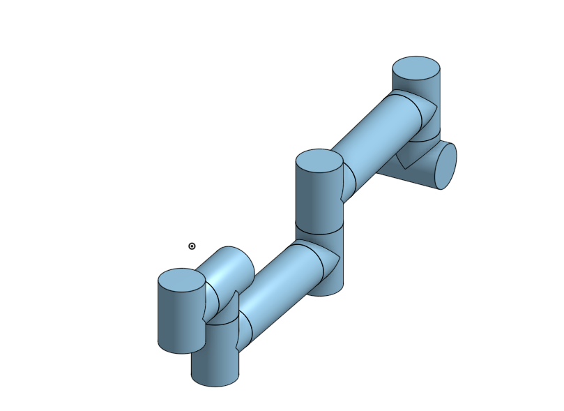

RubbleRob Practice video part1
RubbleRob Practice video part2
RubbleRob Practice video part3
RubbleRob Practice video part4
這周是在做實習任務三http://www.coppeliarobotics.com/helpFiles/en/buildingAModelTutorial.htm
先利用onshape繪製類似的構造

再轉入到vrep裡面做模擬
上傳時陸陸續續遇到衝突，弄得頭都要崩了，結果一問之下是自己的順序用錯了，搞啥阿來著，思緒一亂甚麼都錯...。這週預備週，準備下週考試，這堂課的進度也慢慢在補上。
本週上課老師說明了協同產品設計流程的教育目標，希望因應快速發展的網際雲端環境，利用敏捷可攜的程式環境，透過諸如 V-rep、Webots、ungit 與 GitExtensions 等工具，在便捷的雲端系統搭建自己能夠掌控的機械設計流程，並試圖開發出合用的工具與套件。
今天介紹了實習任務三的 Building a clean model tutorial 到第十週前要將它做完。
下禮拜就是期中考週，老師要我們上課時拍五分鐘的影片裡面要我們這半學期學到的東西，並且個人在推送到分組網站要自己解決衝突問題，並上台報告。
下一周就要期中考了，所以要把前幾周缺的資料補一補，並且老師有說期中考的內容，雖然我還是不知道期中考到底要怎麼用。
這週上課老師講解了實習項目三 首先須在OnShape繪製大概的尺寸
然後再丟入vrep裡面進行運動與動態模擬 此外還必須考慮模擬過程
的實用性
http://www.coppeliarobotics.com/helpFiles/en/buildingAModelTutorial.htm
下周為期中考，可在mde.tw上的網誌聊解期中考的內容，得知期中考影片拍完要放置分組網站或個人網站，但本人認為個人期中考不適合放置在分組網站中，畢竟與主題不合，於是就放置在個人網站。以下為個人網站及github。
my github : 40623237 github
my website : 40623237 website
心得：下禮拜就是期中考週了，大家都陸陸續續的加東西上來，希望期中考週以前就可以完成
Bubble Rob 模擬影片: https://www.youtube.com/watch?v=EwjMVLDm6CU
這週上課做了BubbleRob，一整篇的全英文解說，一邊查單字，一邊看步驟，又要在一堆密密麻麻的文字裡找到關鍵的字詞，真的會死掉，然後不懂的功能又要一直請教會做的同學，真的太感謝他們了。